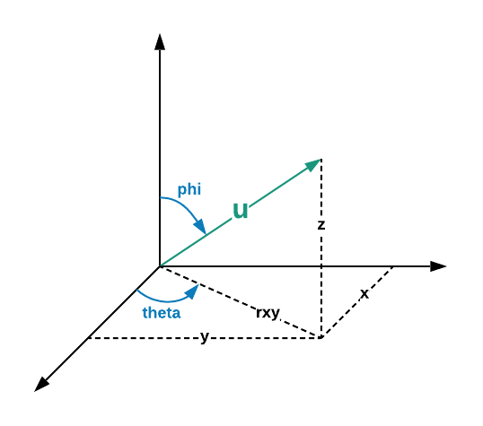
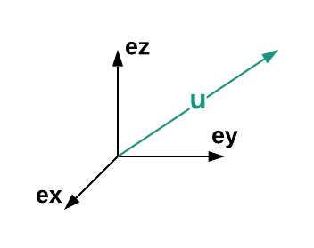
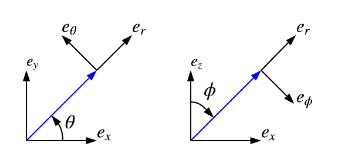

Vector3 represents 3D vectors as a set of three numerical components. It implements Vector interface.
u[0], u[1], ...add, mul, negangle, cross, dist, rot, ...x, y, z, r, theta, lat, lon ...ex, er(u), e(k), ...Vector3 objects are made of an array of three cartesian coordinates in an arbitrary basis [x, y, z].
They can be considered the following column vector :
Before explaining any code lets start by understanding a little diagram.
This diagram represents 3D space provided with an orthonormal basis, we see that u can be
decomposed in three different coordinates systems :
(x, y, z)(rxy, theta, z)(r, theta, phi)Note θ and Φ are respectively denoted theta and phi in the framework
The diagram specifies which convention are chosen for the coordinates systems provided.
You can use the coordinates accessors to get and set the value of the coordinates.
let u = Vector3.ones; // u = (1, 1, 1)
u.r; // +sqrt(3)
u.x = 1; // 1
u.theta; // +pi/4
u.xyz; // [1, 1, 1]
u.r = 1; // u = 1/sqrt(3) * (1, 1, 1)Perform rotations, compute angles, cross product, ...
let u = Vector3.ones, ex = Vector3.ex; // (1, 1, 1) (1, 0, 0)
u.angle(ex); // +pi/4
ex.cross(ex); // (0, 0, 0)
ex.rotZ(Math.PI / 2); // ex becomes eyIf you want to get deep into rotation features see Object3.
Represent the standard basis of 3D space made of :
ex = (1, 0, 0)ey = (0, 1, 0)ez = (0, 0, 1)You can represent the basis (ex, ey, ez) on the following diagram :
ex, ey and ez often respectively represents left, up and forward directions in computer graphics.
Anyway the first notation seems more general because math equations often use it without necessarily referring to these particular directions.
For example ex, ey, ez as respectively right, forward, up directions is often used in mechanics.
Note Here we have drawn ex, ey and ez as respectively right, forward, up.
You can then generate vectors of this standard basis
let ex = Vector3.ex, ey = Vector3.ey, ez = Vector3.ez;The spherical basis vectors at u is represented bellow.
Note All the vector of a local basis are orthogonal to each other and of norm 1.
You can generate or compute a local basis vector of the two coordinates systems.
let er = Vector3.er(u), etheta = Vector3.etheta(u);
w = w.erxy(Vector3.ones) // w = 1/sqrt(2) * (1, 1, 0);The size in bytes of each element in the array.
The ArrayBuffer instance referenced by the array.
The length in bytes of the array.
The offset in bytes of the array.
The length of the array.
latitude of the vector in radians
latitude of the vector in radians
longitude of the vector in radians
longitude of the vector in radians
length of the vector
squared length of the vector
third spherical coordinate, clockwise angle formed with ez in radians
third spherical coordinate, clockwise angle formed with ez in radians
first spherical coordinate, length of the vector
first spherical coordinate, length of the vector
spherical coordinates of the vector
spherical coordinates of the vector
cylindrical coordinates of the vector
cylindrical coordinates of the vector
first cylindrical coordinate, length of the projection of the vector on the plane formed with ex, ey
first cylindrical coordinate, length of the projection of the vector on the plane formed with ex, ey
second cylindrical and spherical coordinate, counterclockwise angle formed with ex in radians
second cylindrical and spherical coordinate, counterclockwise angle formed with ex in radians
first cartesian coordinate
first cartesian coordinate
cartesian coordinates of the vector
cartesian coordinates of the vector
second cartesian coordinate
second cartesian coordinate
third cartesian coordinate
third cartesian coordinate
opposite of the first vector of standard basis (-1, 0, 0)
second vector of standard basis (0, 1, 0)
opposite of the second vector of standard basis (0, -1, 0)
third vector of standard basis (0, 0, 1)
third vector of standard basis (0, 0, -1)
vector filled with 1
vector filled with 0
unsigned angle between two vectors in radians
area of the parallelepiped formed with the two vectors
Returns the this object after copying a section of the array identified by start and end to the same array starting at position target
If target is negative, it is treated as length+target where length is the length of the array.
If start is negative, it is treated as length+start. If end is negative, it is treated as length+end.
If not specified, length of the this object is used as its default value.
cosine of the angle between two vector
cross product of two vector u x v
Returns an array of key, value pairs for every entry in the array
Determines whether all the members of an array satisfy the specified test.
A function that accepts up to three arguments. The every method calls the callbackfn function for each element in array1 until the callbackfn returns false, or until the end of the array.
An object to which the this keyword can refer in the callbackfn function. If thisArg is omitted, undefined is used as the this value.
Returns the elements of an array that meet the condition specified in a callback function.
A function that accepts up to three arguments. The filter method calls the callbackfn function one time for each element in the array.
An object to which the this keyword can refer in the callbackfn function. If thisArg is omitted, undefined is used as the this value.
Returns the value of the first element in the array where predicate is true, and undefined otherwise.
find calls predicate once for each element of the array, in ascending order, until it finds one where predicate returns true. If such an element is found, find immediately returns that element value. Otherwise, find returns undefined.
If provided, it will be used as the this value for each invocation of predicate. If it is not provided, undefined is used instead.
Returns the index of the first element in the array where predicate is true, and -1 otherwise.
find calls predicate once for each element of the array, in ascending order, until it finds one where predicate returns true. If such an element is found, findIndex immediately returns that element index. Otherwise, findIndex returns -1.
If provided, it will be used as the this value for each invocation of predicate. If it is not provided, undefined is used instead.
Performs the specified action for each element in an array.
A function that accepts up to three arguments. forEach calls the callbackfn function one time for each element in the array.
An object to which the this keyword can refer in the callbackfn function. If thisArg is omitted, undefined is used as the this value.
average value of x
average value of y
average value of z
standard deviation along x axis
standard deviation along y axis
standard deviation along z axis
Determines whether an array includes a certain element, returning true or false as appropriate.
The element to search for.
The position in this array at which to begin searching for searchElement.
Returns the index of the first occurrence of a value in an array.
The value to locate in the array.
The array index at which to begin the search. If fromIndex is omitted, the search starts at index 0.
Adds all the elements of an array separated by the specified separator string.
A string used to separate one element of an array from the next in the resulting String. If omitted, the array elements are separated with a comma.
Returns an list of keys in the array
Returns the index of the last occurrence of a value in an array.
The value to locate in the array.
The array index at which to begin the search. If fromIndex is omitted, the search starts at index 0.
Calls a defined callback function on each element of an array, and returns an array that contains the results.
A function that accepts up to three arguments. The map method calls the callbackfn function one time for each element in the array.
An object to which the this keyword can refer in the callbackfn function. If thisArg is omitted, undefined is used as the this value.
Hadamard product of two vectors
Calls the specified callback function for all the elements in an array. The return value of the callback function is the accumulated result, and is provided as an argument in the next call to the callback function.
A function that accepts up to four arguments. The reduce method calls the callbackfn function one time for each element in the array.
Calls the specified callback function for all the elements in an array. The return value of the callback function is the accumulated result, and is provided as an argument in the next call to the callback function.
A function that accepts up to four arguments. The reduce method calls the callbackfn function one time for each element in the array.
If initialValue is specified, it is used as the initial value to start the accumulation. The first call to the callbackfn function provides this value as an argument instead of an array value.
Calls the specified callback function for all the elements in an array, in descending order. The return value of the callback function is the accumulated result, and is provided as an argument in the next call to the callback function.
A function that accepts up to four arguments. The reduceRight method calls the callbackfn function one time for each element in the array.
Calls the specified callback function for all the elements in an array, in descending order. The return value of the callback function is the accumulated result, and is provided as an argument in the next call to the callback function.
A function that accepts up to four arguments. The reduceRight method calls the callbackfn function one time for each element in the array.
If initialValue is specified, it is used as the initial value to start the accumulation. The first call to the callbackfn function provides this value as an argument instead of an array value.
sets vector to zeros
sets vector to ones
Reverses the elements in an Array.
See Object3 for more details
See Object3 for more details
See Object3 for more details
Sets a value or an array of values.
A typed or untyped array of values to set.
The index in the current array at which the values are to be written.
Returns a section of an array.
The beginning of the specified portion of the array.
The end of the specified portion of the array.
Determines whether the specified callback function returns true for any element of an array.
A function that accepts up to three arguments. The some method calls the callbackfn function for each element in array1 until the callbackfn returns true, or until the end of the array.
An object to which the this keyword can refer in the callbackfn function. If thisArg is omitted, undefined is used as the this value.
Sorts an array.
The name of the function used to determine the order of the elements. If omitted, the elements are sorted in ascending, ASCII character order.
Gets a new Float64Array view of the ArrayBuffer store for this array, referencing the elements at begin, inclusive, up to end, exclusive.
The index of the beginning of the array.
The index of the end of the array.
Converts a number to a string by using the current locale.
Returns a string representation of an array.
Returns an list of values in the array
vector from coordinates of array in the form [x, y, z, ...]
order of the vector in basis
order of the vector in basis
vector with coordinates following gaussian law. See Vector3.gaussian for more details.
vector with given cylindrical coordinates. See [[this.rthz]] for more details.
vector filled with s
Generated using TypeDoc
Brief
Vector3 represents 3D vectors as a set of three numerical components. It implements Vector interface.
Main features
u[0],u[1], ...add,mul,negangle,cross,dist,rot, ...x,y,z,r,theta,lat,lon...ex,er(u),e(k), ...Getting Started
Vector3 objects are made of an array of three cartesian coordinates in an arbitrary basis
[x, y, z]. They can be considered the following column vector :Coordinates systems
Before explaining any code lets start by understanding a little diagram.

This diagram represents 3D space provided with an orthonormal basis, we see that
ucan be decomposed in three different coordinates systems :(x, y, z)(rxy, theta, z)(r, theta, phi)Note θ and Φ are respectively denoted
thetaandphiin the frameworkThe diagram specifies which convention are chosen for the coordinates systems provided.
You can use the coordinates accessors to get and set the value of the coordinates.
Example
let u = Vector3.ones; // u = (1, 1, 1) u.r; // +sqrt(3) u.x = 1; // 1 u.theta; // +pi/4 u.xyz; // [1, 1, 1] u.r = 1; // u = 1/sqrt(3) * (1, 1, 1)Geometrical features
Perform rotations, compute angles, cross product, ...
Example
let u = Vector3.ones, ex = Vector3.ex; // (1, 1, 1) (1, 0, 0) u.angle(ex); // +pi/4 ex.cross(ex); // (0, 0, 0) ex.rotZ(Math.PI / 2); // ex becomes eyIf you want to get deep into rotation features see Object3.
Standard basis
Represent the standard basis of 3D space made of :
ex = (1, 0, 0)ey = (0, 1, 0)ez = (0, 0, 1)You can represent the basis
(ex, ey, ez)on the following diagram :
ex,eyandezoften respectively representsleft,upandforwarddirections in computer graphics.Anyway the first notation seems more general because math equations often use it without necessarily referring to these particular directions.
For example
ex,ey,ezas respectivelyright,forward,updirections is often used in mechanics.Note Here we have drawn
ex,eyandezas respectivelyright,forward,up.You can then generate vectors of this standard basis
Example
let ex = Vector3.ex, ey = Vector3.ey, ez = Vector3.ez;Spherical and cylindrical basis
The spherical basis vectors at
uis represented bellow. Note All the vector of a local basis are orthogonal to each other and of norm 1.
You can generate or compute a local basis vector of the two coordinates systems.
Example
let er = Vector3.er(u), etheta = Vector3.etheta(u); w = w.erxy(Vector3.ones) // w = 1/sqrt(2) * (1, 1, 0);